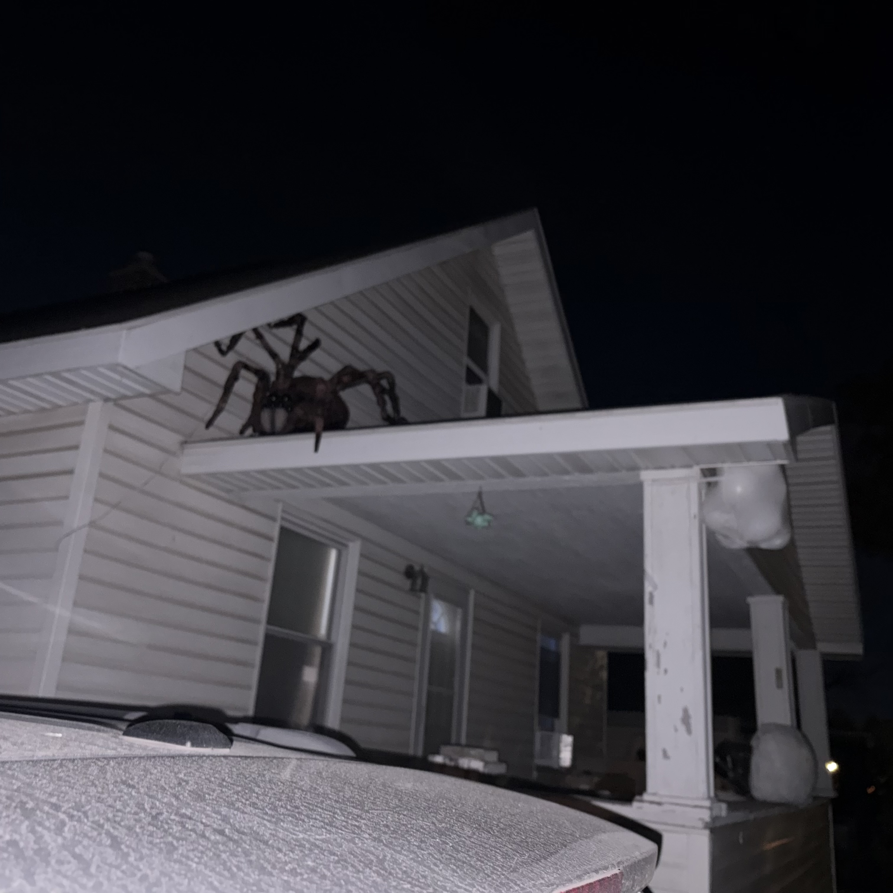
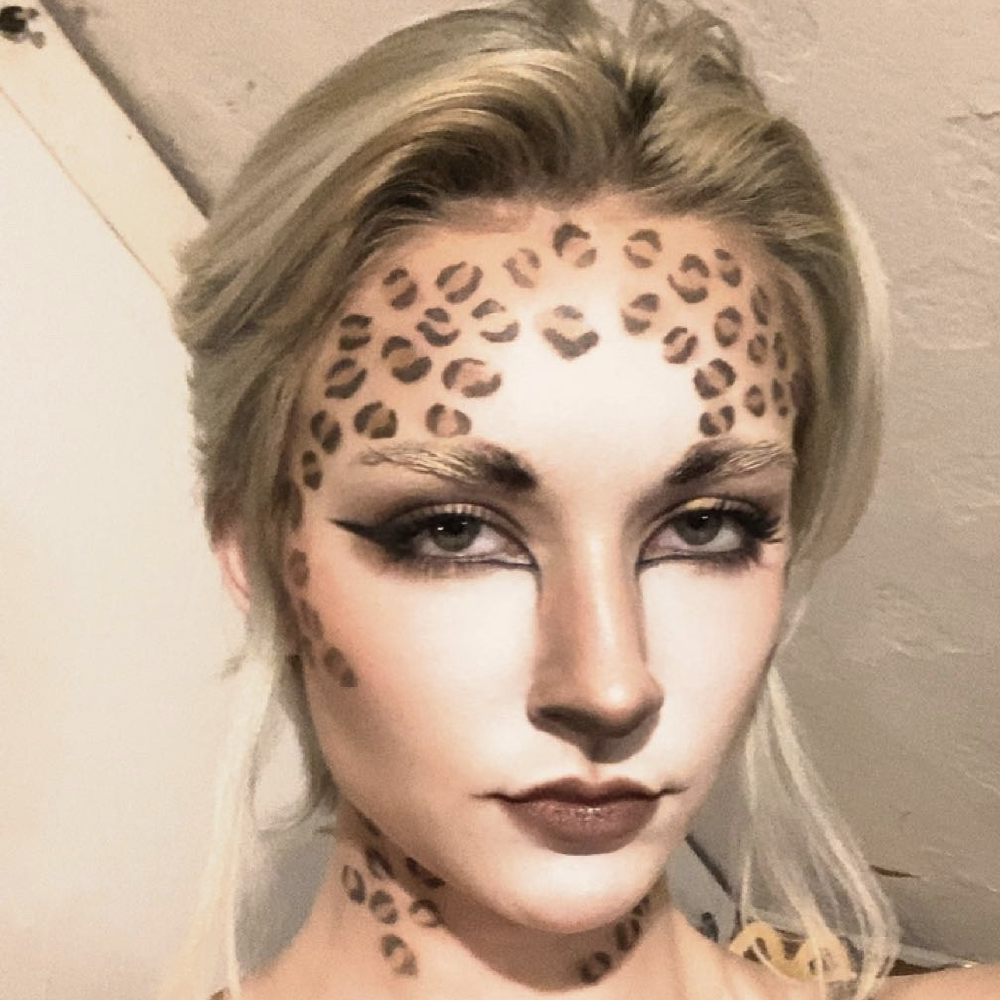

Halloween
Halloween is a very important holiday in my family. Since we grew up on horror movies and enjoyed a good fright, we naturally went all out on our costumes during Halloween. Some of mine were...
Delainey Carrigan
I am a Computer Science Junior attending SVSU interested in IT, Cybersecurity, website building, and game creation. I am looking for a position that will teach me about necessary workplace skills and computer programming skills. I am ready to learn and collaborate with others to grow my computer science abilities. Aside from Computer Science, I am also interested in body art, tattoo artistry, face paint, makeup, nature, reading, exercise, animal-traing, special FX, and much more.

Portfolio Wireframe
For this project, I was assigned with the task of creating a wireframe of my portfolio. This involved aligning all the groups of the portfolio (nav, about me, projects, education, blogs, experience, and footer) in an orderly fashion with limited attention to color and design.

Portfolio Website
For this project, I was assigned to take my wireframe and transform it into an actual website. This involved creating an interactive website using HTML, CSS, and JavaScript. The website also required a professional color palette and appropriate sizing.

Halloween is a very important holiday in my family. Since we grew up on horror movies and enjoyed a good fright, we naturally went all out on our costumes during Halloween. Some of mine were...

Art has always been a very important part of my life, but body art has aways been my passion. The term Body Art refers to anything artistic that is done on/to the body such as...
In my career, I am tasked with helping customers with their needs in a kind and patient way. More specifically, I help customers check out their products, return unwanted products, and answer any questions they have about the store. I am also tasked with promoting the TJX credit card to all customers fairly.
My time volunteering at the Midland County Humane Society involved helping with assigned chores and tasks. These chores and tasks involved walking dogs, cleaning cages, socializing the animals, replacing food/water, and replacing used litter.